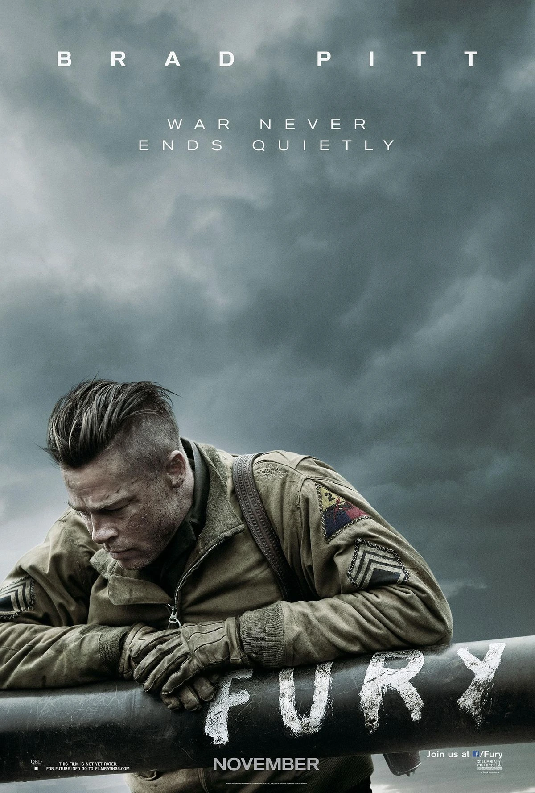

Comédia


Ação



Drama


Ficção Científica


Terror

Invocação do mal
Os invesitgadores de actividades paranormais, Ed e Lorraine
Warren, trabalham para ajudar a uma familia aterrorizada por uma
escura presença na sua casa.

O bebê de Rosemary
Um jovem casal se muda para um apartamento em uma área
tranquila. Quando a esposa está misteriosamente grávida, a
paranóia pela segurança do feto começa a controlar sua vida.

O enigma de outro mundo.
Uma equipe de pesquisa na Antártica é caçada por um alienígena que muda de forma e assume a aparência de suas vítimas.

O exorcista
Quando uma adolescente é possuída por uma entidade misteriosa, sua mãe busca a ajuda de dois padres católicos para salvar sua vida.

O iluminado
Uma família se dirige a um hotel isolado para o inverno, onde uma presença sinistra influencia a violência do pai, enquanto seu filho psíquico vê presságios horríveis do passado e do futuro.


Romance

Amor e outras Drogas
Um vendedor charmoso se apaixona por uma mulher com Parkinson, e
os dois enfrentam juntos o desafio da doença.

Antes do Adeus
Dois estranhos presos em Manhattan à noite se tornam confidentes
quando uma aventura inesperada os força a enfrentar seus medos e
assumir o controle de suas vidas.

Como eu era antes de você.
Uma garota forma um vínculo improvável com um homem recentemente
paralisado que ela está cuidando.

Deixe a neve cair.
Em uma pequena cidade na véspera de Natal, uma tempestade de
neve reúne um grupo de jovens.

Ela é demais para mim
Joe conhece a mulher perfeita, mas sua falta de confiança e a
influência de seus amigos e família começam a afetar o
relacionamento.

Questão de tempo
Ao completar 21 anos, um homem descobre que pode viajar no tempo
e mudar o passado. Depois de usar o poder para conseguir uma
namorada, ele precisa lidar com consequências inesperadas.
.webp)
Três vezes amor
Um consultor político tenta explicar o divórcio iminente e os
relacionamentos passados para sua filha de 11 anos

Simplismente Acontece
A Rose e o Alex são melhores amigos desde os 5 anos, mas frente
as desições de amor são os piores inimigos.